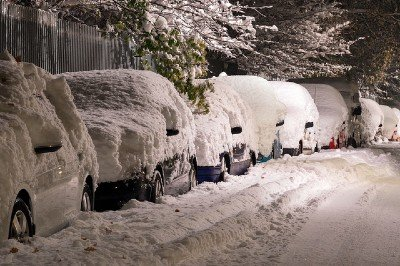

Record Snowfall Continues Over Southeastern Idaho
by Chase Bennett
This winter season seems to be making up for the light snowfall in prior years. With 18 inches of total snowfall so far this month, we're poised to break records with the coming storm, which is estimated to bring another 6-8 inches of snow over the next few days. Road crews, who worked tirelessly to clean up last week's storm, will have to get back at it beginning around 8:00 PM tomorrow evening. The forecast leaves residents wondering—when will it end?